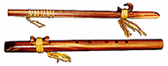

Igil/Игиль: Тувинский народный струнный интрумент. На Алтае известен как икили, в Хакассии - ыых. Корпус игиля деревянный, дека из кожи(изредка - из дерева). Струн из конского волоса всего две, причем мелодию исполняют только на одной. Звук извлекают коротким изогнутым в форме лука смычком. Игра флажолетная. Ipu: Традиционный гавайский gourd-барабан небольшого размера, используемый танцорами hula. Ipu heke: Гавайский барабан, сделанный из двух gourd неравного размера. Отвертие верхнего открыто, части соединены хлебно-фруктовой пастой. Исполнитель сидит на земле, левой рукой держит ipu heke, а правой выбивает на нем ритмы. |
Indean Flute: Изготавливаемая из кедра флейта американских индейцев, известная свыше 700 лет.  У нее шесть/пять отверстий, которые покрывают чуть больше октавы; строй от пентатоники до диатоники. Иногда концу флейты придают форму орлиного клюва, существуют и блок-флейты.В культуре Lakota эта флейта называлась love-flute/флейта любви и на ней ночами играли молодые люди, не показываясь на глаза возлюбленной. |